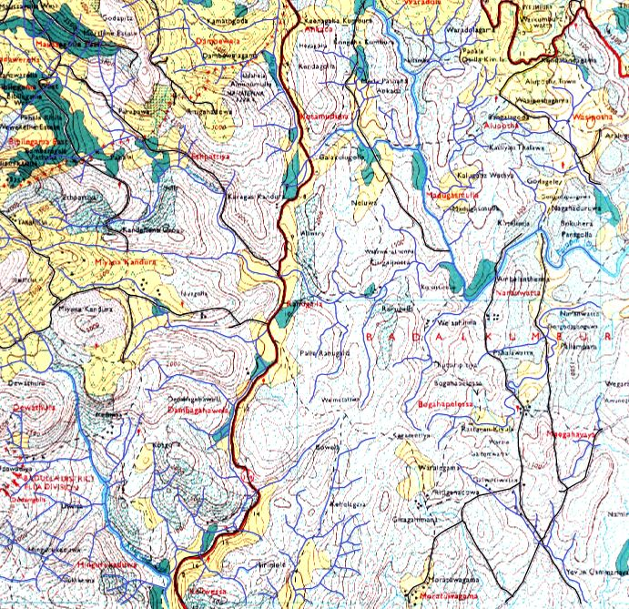
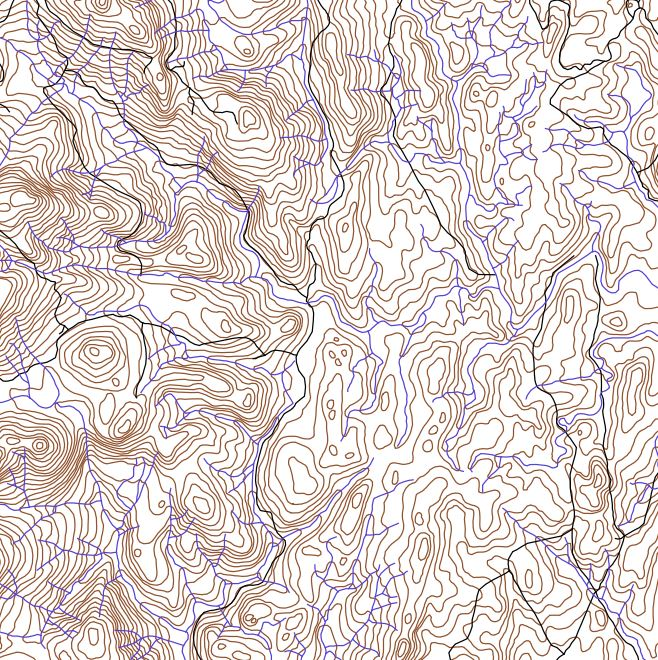
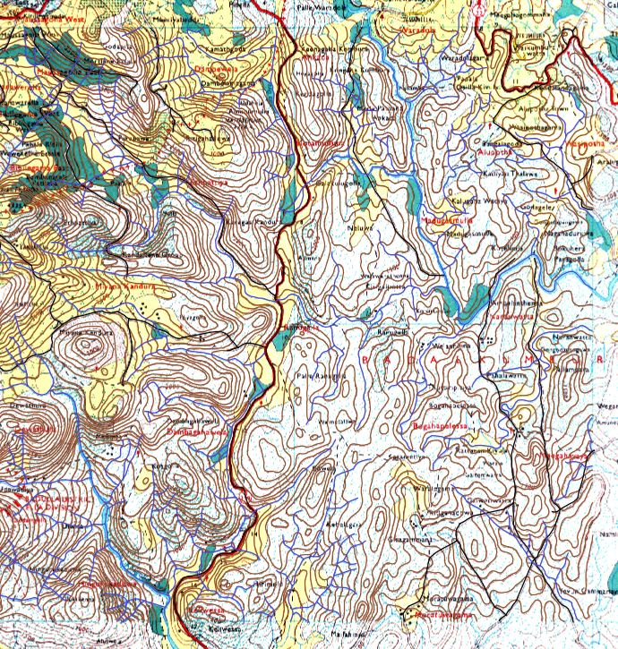

Interactive exploration of elevation contours, river networks, and road systems derived from topographic maps
Study Area → Digitized Layers → Complete Overlay

Original study area boundary extent

Extracted contours, rivers & roads

All layers combined on study area